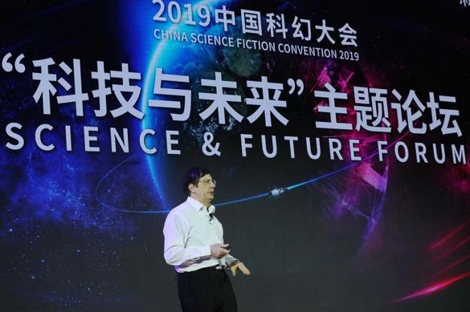
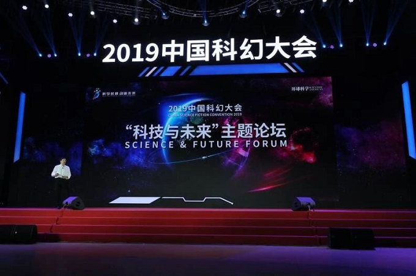

2010年诺贝尔物理学奖获得者、英国曼彻斯特大学物理学教授安德烈·海姆，为我们讲述石墨烯以及更多全新二维材料的故事。
在11月3日的中国科幻大会“科技与未来”论坛上，被称为“石墨烯之父”的2010年诺贝尔物理学奖获得者、英国曼彻斯特大学物理学教授安德烈·海姆，为我们讲述了石墨烯以及更多全新二维材料的故事。以下为演讲全文。
很高兴受邀参加这个专题论坛。在这个论坛中，我特别希望能给科幻贡献一点点科技力量。10到15年前，很多科学还停留在科幻层面。我想从物理学与材料学的角度，给大家来介绍一下在这个领域现今研究最火的一些材料。
人类的文明从四千前开始发展，从瓷器时代到青铜时代，再到铁器时代，每个时代都有一种材料来代表当时的发展。我们现在生活的这个时代，就是塑料与硅的时代，这也是现今我们文明的代表性材料。那么一个简单的问题，不仅是从科幻的角度，我想每个人都会感兴趣未来会发生什么，下一步会是什么呢？有哪些材料出现，帮助我们改善生活，让如今的文明更好地发展呢？
我想说未来的一个时代是二维材料的时代，那在未来一百多年甚至一千多年，这种材料在我们的生活中起什么样的作用呢？在回答那些问题之前，我先跟大家讲一些我个人的故事，有关于我的好奇心，我相信年轻人应该明白怎么去做，我希望我的故事对大家有所启发。这些故事讲述了我们如何开始这项研究，以及我如何发现了这些二维材料。
20多年前，我获得了终身教授的资格。有时候做科研会比较枯燥，所以我会做各种测试，希望根据一些科幻或自己的好奇心去找一些比较新颖的材料与物质，好进一步研究。当时，我做过的一个实验是什么呢？这个实验现在已经广为人知，也比较受人欢迎。但当时那个实验并不是我预期去做的，也没有一个人会想到做这样的实验。
当时在荷兰，我们用超强磁场的设备在做一些实验。其中有些设施，大家对它们的利用率不是很高，但设备不用也会慢慢老化。所以，我开始想用这些设备能做些什么，为什么不做一些实验呢？当时出于好奇心，我想知道把水倒在强磁场中会发生什么呢？因为我学了很多年的物理学，也知道一些常识，比如我们经常可以买到小的除垢器，据说按上这个除垢器之后，可能过几天或者几周后，水垢就会消失了。所以，我在想如果这种有磁力的水真的存在的话，为什么我们不进一步澄清背后的物理现象，了解的更清楚呢？
所以，我就想强磁场设备与其放在一边老化不如利用起来，于是我把水倒到了强磁场设备中。一般从科学家角度，大家会惊讶用这么昂贵的设备做这样的实验。当时我把水倒进去之后，你会看到视频上有一个水滴悬浮着，而且它发出这样的颜色，就好像是反磁力一样。在这个空间里面，它的磁力和引力好像消失一样，就如同在宇宙飞船中消失了磁力引力一样。
当时，水产生了逆磁效应，其实它只是抗磁性。这非常简单，每个人、每件物体，其实都有一定的磁性，但是因为这种磁性和磁力比较小，所以没有人留意到。所以，我和当时的同事都很吃惊，那么多年来，大家从来没有想到这个磁力是无处不在。后来，因为一些其他的想法我们又做了一些实验。除了水在高磁场当中，我们还可以把什么东西放进去做实验呢？最后我们发现什么东西放进去都会浮起来。慢慢我有了这些想法，有没有别的东西放进去也可以浮起来呢？所以我后来拍了这段短片，这是20年前我做的实验当中这是最难的一个实验，因为当时想把青蛙放进来，但是青蛙跳来跳去很难放进去。可能很多人觉得这是很简单的一个实验吧，但是简单的事情，背后往往有一些收获。当我参加会议时很多人对我说，我认识你，虽然我不知道二维材料是什么，但是我知道那个青蛙实验。
所以，通过这种不同的实验，我们就会知道更多地观察我们生活的这个世界和周遭，其实很多东西并非如生活中所见不到。我在遇到很多事情时，都会想能不能从中研究一些东西，从现象中学到一些东西。我也是这样去思考自然界的很多事情。
所以我后来看到壁虎，中国也有很多壁虎，那我从壁虎身上学到了什么呢？壁虎可以完全在墙上爬，但依赖的是一种非常简单的机制。壁虎的脚爪上面有很多细细的、特别小的绒毛，在这个尺度上这些绒毛的表面会产生一种力，这种力非常小，可能只有十分之一牛顿（N）。正因为这些细小的绒毛，所以壁虎可以把数十亿的小绒毛利用起来，让它们可以在任何墙体的表面爬行，比如在垂直的墙壁上爬行。当时我就有一个想法，如果这么简单的话，也许我可以在工作当中，将这个尺度上的力作为一个研究方向。物理学中的研究一般比较复杂，但是也许在这个尺度的研究我可以考虑看看。
所以，后来我把这种方法与机制应用到了一种胶带上面，我们做了一种类似壁虎的胶带，可以粘在玻璃和窗户上。但是这种材料不可多得，后来我做了一点材料，就是它可以让你像壁虎一样，牢牢地粘在玻璃表面。我在德国的同事们，他们做了好大块的材料，一手粘在玻璃上，可以完全悬空起来。这就是充满好奇地观察生活当中的小事获得的成果，这就是好奇心的重要性。
我的好奇心又把我带到另外一个领域，就是研究石墨烯。很多哲学家都说过，如果把材料不断地分开，不断地分离会发生什么呢？最后就会产生一种原子。物质越来越微小，最后只剩下了原子，这是大自然当中一个最小的可见结构。所以我们把这种材料不断地分离，不断地一层一层分开，然后做各种实验，就是为了把它里面最小的结构给区分开和分离开。后来，我们有了这样一卷胶纸，能把石墨烯最小的结构分离出来了。石墨就是所有铅笔组成部分，是铅笔的笔芯。石墨很容易作出非常多的晶体结构，如果你直接看它的表面看上去就像垃圾（黏在胶带上的石墨）一样，对吧？
这些步骤我都经历过和做过，在显微镜下面，你会看到这些石墨以及它的形态发生了变化，它的结构你也看得很清楚。而且这些结构当中，有一些光可以透过去，而且有一些是透明的，光可以完全通过。如果你了解有关材料学、物理学最基本的知识的话，就会知道如果一种材料是透明的，这就意味着它会特别薄。所以，我们在做研究的时候就意识到，我们可以把石墨做到特别薄的程度。
那为什么我会对像垃圾一样的胶带上的石墨，产生这么大的兴趣呢？因为有很多哲学家和科学家都会有不同的理论，那么我们为什么会对这个领域产生兴趣呢？如果你看我们所在的这个世界，我们周围的世界，所看到的任何物体材料及一切事物，它们都有一定的厚度，是3D（三维）物体，这也是自然界的一个最根本的原则。我们几乎找不到只有一个原子厚度的东西，所以大家都会说任何东西都是三维的。如果是还处于分子与原子层面的物质，你看它都会慢慢这样发展和生长，慢慢会变成三维结构。
也就意味着在实践当中，我们其实可以这样思考，我们所做的一些实验是在低于石墨生长的温度下，提取一片原子宽度的石墨烯，这是有可能的。之前没有看到过，99.9%的人也没有想到这些材料会存在。虽然非常难，当将这些材料放在一个空气湿度和室温都非常高的条件下，材料会被毁坏。我们可以做的就是从中提取出来一个很薄的平面，再去获得一个原子厚的晶体，这是非常完美的石墨烯提取方法。我们可以将石墨烯应用在现代技术，也可以应用在非常新的技术领域。
我们从这些环节当中学到什么呢？答案就是部分不总是和总体相似。很多时候，大家会觉得一个原子厚的材料与整个材料具有类似的性质。我们再看这种材料的性质，其实是非常惊讶的，我们可以看到有非常多的特性，比如说石墨烯是最强的材料，它也超过其他一些材料的特征，包括电导和热导等。还有一些加热的原子，很多时候它们或一些分子是无法通过只有1cm的材料，但是可以穿过石墨烯。我们主要学到的更少就是更多，这些2D的材料，不仅仅是代表它们3D的组成部分，而是它们本身可以带来不同的性质，一些极其特殊的性质。
我获得诺贝尔奖不是因为一些别的研究，只是在物理学上对于这种材料和它的一些电子特性的研究。这是一个非常大的研究领域，在全世界有非常非常多，几百个、几千个研究组在研究这些材料，主要涉及如何将这些材料带到了生活中。我也有一些有关电流如何在这些材料当中穿过或者运动的研究，这非常振奋人心，更加振奋人心的就是从物理学角度去认识它。
我给大家举一个例子，从物理学角度来看这些材料有着怎样非一般的特性。大家都知道，我们生活在一个经典物理的世界中，如果有汽车撞到墙的话，大家都知道结果是什么，基本上是车毁了。大家知道原子在不同的时期，都遵循着量子力学的规则。那么在这样量子世界，我们可以想象有一辆量子车，它具有一些穿过电子层的特征，会产生一种量子隧道效应 的现象。这个车是否能穿过，取决于障碍物的宽度，还有车本身，但整个石墨烯电子测距来讲是非常不一样的，它与量子世界非常不一样。
在这个世界上，它经常与粒子物理有关，有时候人们对一种现象十年前就比较熟悉了，但是不太可能去验证这些现象。这些现象告诉我们的是什么呢？我们生活在一个遵循量子规则、小粒子以光的速度来运行的世界。而在这样的宇宙过程当中会发生什么呢？我们遵循这个自然法则建一个汽车，无论障碍物有多高、多宽，我们的汽车都可以穿过。这种现象是一种日常现象，它解释了为什么石墨烯有着超高的导电性。虽然，在石墨烯当中有很多的障碍物，但电子其实可以穿过，基本上不会意识到这些障碍物的存在。这是一个简单的概念，这些材料可以带给我们几百万个非常独一无二有趣的现象。
这种非常薄的材料具有非常好的性质，在过去10-15年这个领域的发展情况其实不止如此。通过不断地细化石墨烯结构遵循这些原则后，我们发现石墨烯表现的现象并不是一个单一的存在，还有其他的一些材料具有类似的性质。在发现石墨烯一年之后，我们发现至少有几十个其他的材料，只有一个原子或者一个分子这么厚。当时是2005年，而十年之后我们就知道现在已有几百个甚至几千个不同的材料，当然全球还有非常大量的研究已经发现这些材料有哪些有趣的应用。所以，我们看到了这个材料的变革，这就是2D材料革命。15年前，我们不仅仅不知道这些材料可以存在，甚至主动认为这些材料是不可能存在的。
如果这还不够的话，还有另外一些关于石墨烯和这些材料的讨论。如果大家有实验室，实验室中有一个原子或一个分子的材料，那么你会对这些材料进行一些实验，想要把它们合成到不同的厚度和其他完全新的东西。列如，合成一个3D的材料，但是现在是用一个原子的精度来做的，是原子材料的一种实验。
我们可以看到正六边形材料的研究很火热，但是我们看到每一种功能不同的六边形材料，是因为合成了不同的厚度。具体的例子，我们可以用材料去做什么，这是真实的图片，我们可以如何利用六边形的材料，每一个都是原子这么厚，它们不同的材料都是在这样一个单层当中，还会有半导体，整个会产生一种LED光屏，这个与屏幕上和手机上的LED采用了一样的原则，区别是可以做成非常薄、非常灵活以及非常坚固的电子学材料，而且它是非常透明的。之后大家可以具体了解到。
当然，这些是非常小的学术成就，因为在工业应用上还需要继续做很多的研究。但是大家知道这个图片，它其实是70年前的一个传输器，它非常丑，在当时用作原理展示。那么在60年之后，石墨烯就让电脑的芯片或者是我们的手机、电脑运转，我们也可以期待这些六边形材料，可能是在30、40或50年以后，为我们未来带给什么。
最后我会讲到我们的应用，当然当我们研发新的材料之后，我们会想到怎么用这些材料，特别是当你得到像石墨烯这样具有多种超级性能的材料之后，你经常会有很多的想法。全世界已有几千个公司在开展工作，想要将石墨烯产业化。有很多大的企业投入到石墨烯产品的生产中，例如中国的华为公司，以及其他都想应用石墨烯产品的公司。另外，还有学术的研究，科幻作家，还有一些小说家，他们也在想，石墨烯实验会带来什么样的结果，他们有时候会有一些预测非常远，视野非常大，非常难判断那些是不是现实的预测。还有一些非常前沿的预测，可能在几年以后会实现。当然我们有各种各样的实验，来看未来应用的2D材料。
这个宣传片展示了该公司的一些愿景，他们想要一些非常灵活的、透明的电子产品，这些可以通过2D材料进行制作。这是一些例子，还有之前的LED，这样一种透明的应用，也不再是一种科学、科幻。现在已经是非常接近与商业应用，公司现在也在进行一些研究或者考虑，但是这也是出现未来20年甚至更远。现在正在到来的，可能是需要电脑、软件和写一些程序，几年之后就会成为几十万的富翁，但是对于2D材料的发展需要更长的时间，慢慢进入我们的生活。
再看一些有关现在进展的例子。我们看到这个材料已经开发了10多年，现在有一些含有石墨烯的消费者产品，你可以在互联网或者在商店买到。那么，在石墨烯几个之最的特性当中，你可以看到很多石墨烯的特性，最终能把它转变成消费产品。现在已经有可以用在电池上面的石墨烯降温技术，或者添加了石墨烯的电池，因为用石墨烯电池产的热量减少很多。比如在充电方面，这种电池也比普通的电池快5倍。
举另外一个例子，如果我们把石墨烯放在跑鞋当中，那么跑鞋的寿命能够延长40%，对大部分人来讲，没有太要紧。但是对于运动员来讲，40%的意义是很显著的，因为他们经常大量运动，普通运动鞋可能一两周就磨损了。所以我们希望以后这种鞋子可以量产。再举另外一个跑车的例子，我们对这种跑车的材料用一种复合材料，用石墨烯把它进行改进加强，那么这些未来的汽车当中，它就会拥有这样的特性，因为有石墨烯的成分，那么它就更加坚固，更加抗冲击。那么，2D材料的可用范围特别广，可以用到无数的领域。而未来这些领域，也可以生产消费者需要的产品。
今天给大家讲的故事当中，我们要收获到的一点是什么呢？正是因为出于好奇心，我在50年前开始注意到2D材料，我相信在未来你会感受到更多这个领域的研究与应用。所以，我们还没有完全进入2D材料时代，它完全是一种全新的材料。那么这些全新材料在几年前大家都还不知道，我相信这些材料未来成为我们的工具箱中一员，基于这个基础上，我们还可以做更多的开发与研究。
非常感谢大家的聆听，谢谢大家！